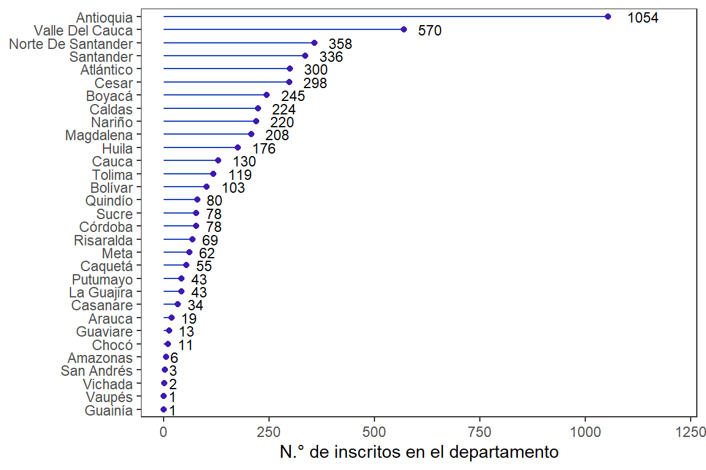
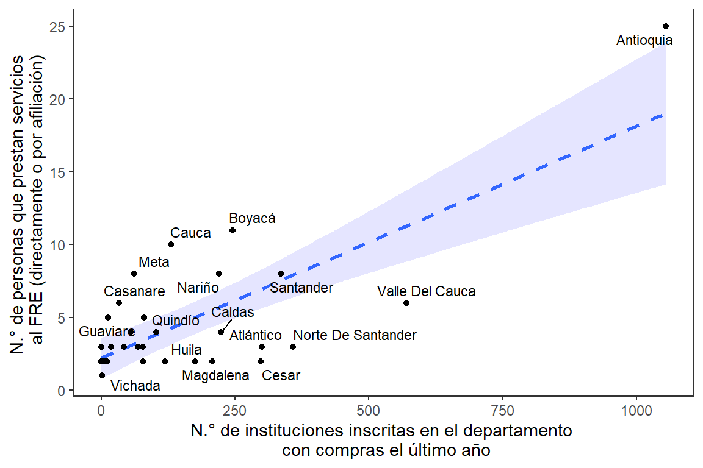

4.1 Estructura del FRE
4.1.1 Fecha de constitución de FRE
Figura 4.1: Serie de tiempo de actas de creación de FRE
4.1.2 Estructura organizacional
Figura 4.2: Perfil de profesional de encargados de los FRE

Figura 4.3: Perfil de profesional de encargados de los FRE por departamento

Figura 4.4: Perfil de profesional de personal de los FRE (encargado y apoyos)

Figura 4.5: N.° de personas que trabajan en el FRE

Figura 4.6: N.° de personas que trabajan en el FRE por departamento

Figura 4.7: Tipo de vinculación al FRE
4.1.3 Instituciones inscritas en el FRE
Figura 4.8: N° de instituciones inscritas en el departamento
Figura 4.9: Relación entre N° de instituciones inscritas y personal del FRE
4.1.4 Caracterización de las fuentes de ingresos de los FRE
Figura 4.10: Proporción de fuentes de ingresos de los FRE

Figura 4.11: Mapa con fuentes de ingresos de los FRE